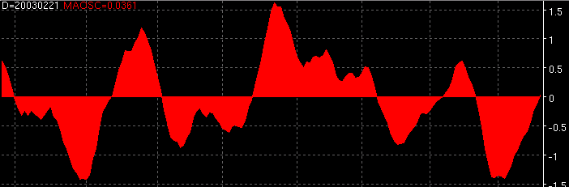

Moving Average Oscillator - MAOSC

Parameters:
- Input - The data field the MAOSC is based on
- MA Period - The period of the first MA
- MA Period 2 - The period of the second MA
- MA Type - The type of MA to use for first MA
- MA Type 2 - The type of MA to use for second MA
- Color - MAOSC color
- Line Type - MAOSC line type
- Label - The text to identify the MAOSC plot
Description:
Alerts:
True